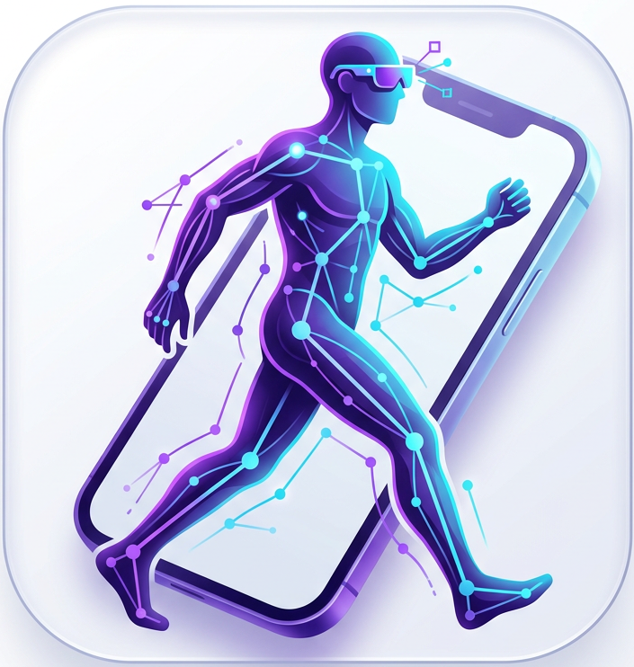
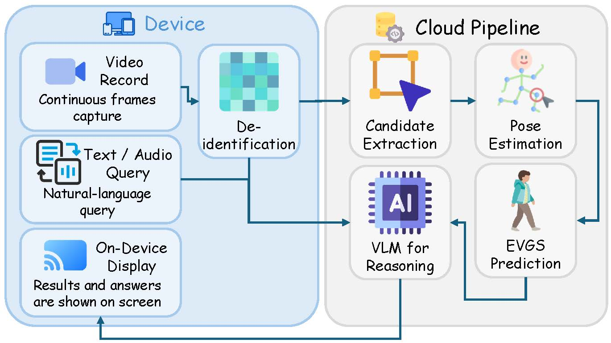
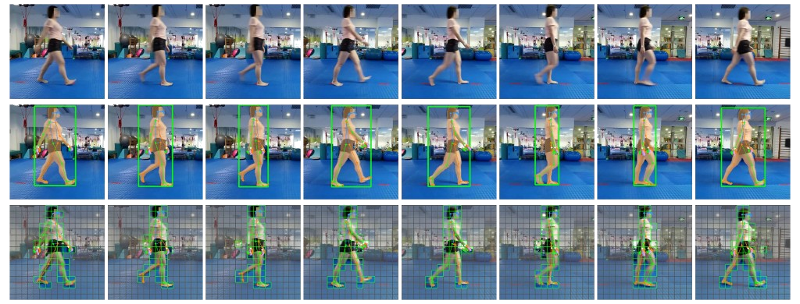
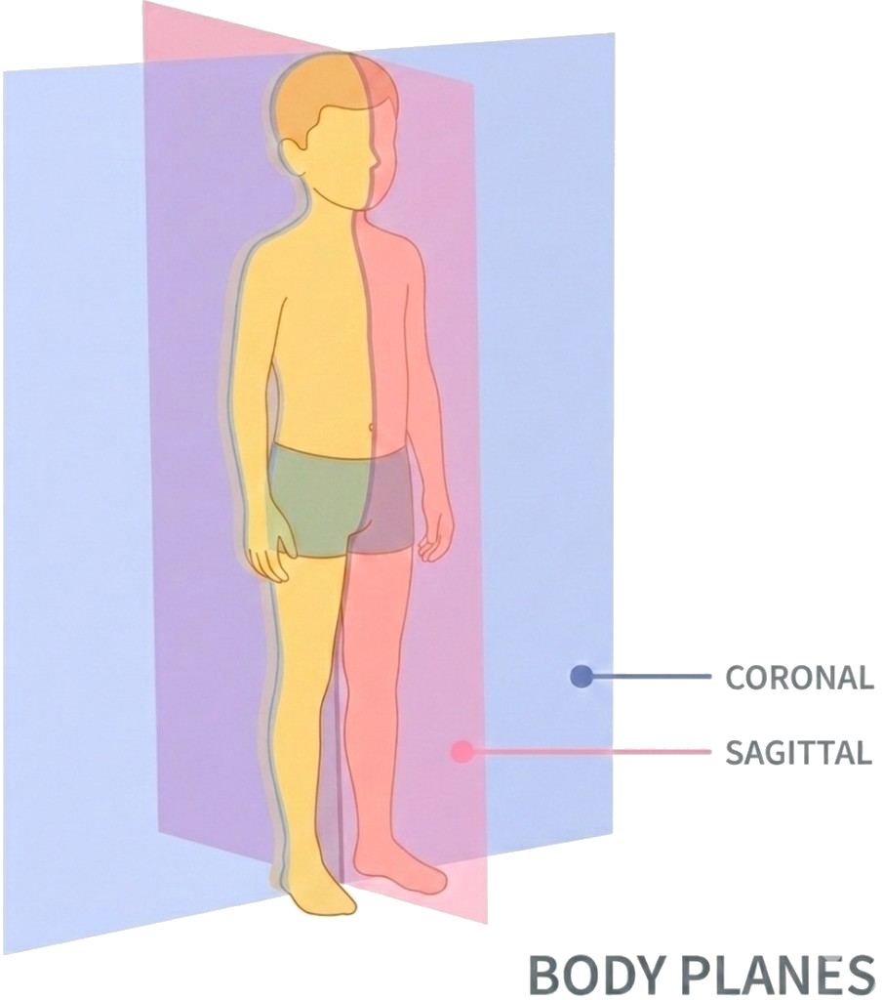
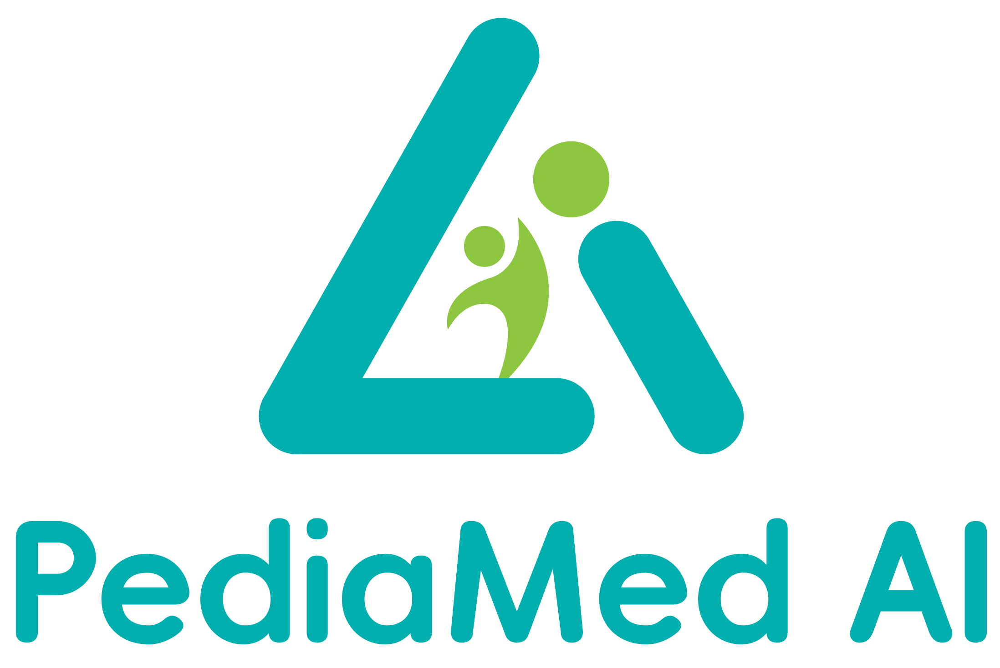

Real-time gait video
Walking footage streams incrementally for online analysis instead of offline batch review.

GaitAgent is a versatile application for parents and clinicians to monitor pediatric gait. From Cerebral Palsy assessment to early screening for typically developing children, we provide the tools for timely correction and expert guidance. The paper of the core algorithm in GaitAgent has been accepted by ECCV 2026 with title Decoding Children's Gait Behavior.
Project overview
GaitAgent turns live walking video into fine-grained pediatric gait analysis, automated EVGS scoring, and interactive guidance. Beyond assessing neurological conditions like Cerebral Palsy, it serves as a critical early-screening tool for typically developing children. Much like pediatric orthodontics, catching minor gait abnormalities early empowers parents and clinicians to work together on timely, preventative corrections—all through an easy-to-use mobile application.
Walking footage streams incrementally for online analysis instead of offline batch review.
ChildGait-Video predicts Edinburgh Visual Gait Scores across 34 sub-items per limb as the child walks.
A vision-language model lets clinicians ask questions about gait patterns, scores, and observed abnormalities.
Returns reviewable EVGS scores and grounded Q&A responses — support for both parents and clinicians, not autonomous diagnosis.
A cinematic walk-through of capture, kinematic prompting, and EVGS scoring within the application.
Our framework bridges the gap between raw video capture and clinical decision-making, utilizing a Vision-Language Model (VLM) to provide grounded, interactive evidence across mobile and XR devices.

At the core of our analysis engine is ChildGait-Video, a two-stage adaptation paradigm that injects anatomical priors and constrains attention for high-precision EVGS scoring.
Our Website→
Standard clinical video — no depth rig required.
Skeletal keypoints rendered onto the frame as token-level cues.
Keeps only foreground patches — the child, not the room.
Vision transformer aggregates pruned, prompted tokens.
MLP head predicts per-item Edinburgh Visual Gait Scores.
Built on the Children Gait Video (CGV) dataset — 1,185 videos from 110 pediatric subjects with bilateral EVGS labels — we benchmark the GaitAgent app against fine-tuned BiggerGait and VideoMAE v2. Our application reaches 70–93% per-item accuracy, with average gains of +15% / +12% on the left / right limbs over VideoMAE v2.
L-AVG / R-AVG on the CGV test split — same metrics as the detailed table below.
CGV is the first open-sourced children gait video dataset. After obtaining IRB approval from affiliated hospitals, we recorded children performing a short walking task and annotated each limb with the 17 Edinburgh Visual Gait Score (EVGS) sub-items, along with rich frame-level masks, bounding boxes and anatomical keypoints.
Videos are recorded at a children's hospital in Asia using smartphone and action cameras positioned simultaneously to capture two body planes. A primary camera sits at the terminus of an 8-meter walkway to record the coronal (frontal & posterior) view, while a secondary camera is oriented orthogonally toward the center of the walkway to capture the sagittal (lateral) view. The lateral camera is placed far enough that its field of view covers the middle four meters of the trial space — calibrated to guarantee 2–3 complete gait cycles per subject. In each session the child performs a brief 3–5 second walk, captured at high frame rate.
Every video receives detailed per-frame and per-video annotations. We first use SAM 3 to detect the subject's body bounding box and instance segmentation mask (manually selected by human annotators), and Sapiens-2B to estimate the 2D anatomical keypoints (manually adjusted by annotators). The clinical EVGS sub-items are then graded by an experienced pediatrician in the author team and reviewed by a senior pediatrician with 40 years of clinical experience, while diagnosis results are traced from each patient's follow-up records.

Each limb is assessed on 17 fine-grained gait parameters drawn from the Edinburgh Visual Gait Score, spanning the foot, ankle, knee, hip, pelvis and trunk across both the sagittal and coronal planes.

Hover (or tap) a box / marker to zoom in and read the detailed scoring criteria.
We compare fine-tuned BiggerGait, fine-tuned VideoMAE v2 and ChildGait-Video on the CGV test split. Toggle between the left and right limb; all values are percentages (%), with L/R-F1 the average F1-score across all items.
GaitAgent is built for flexibility. It deploys seamlessly as a mobile application across smartphones and AR glasses, turning everyday hardware into powerful tools for parents and clinicians alike.
Run the full analysis pipeline on your smartphone or through AR glasses for first-person capture.
Chat with the AI agent on any screen to query gait anomalies or review EVGS scores in real time.
No extra setup required. Record on your device of choice and get immediate clinical feedback.
The GaitAgent app analyzes walking patterns, surfaces evidence, and reduces cognitive burden while keeping human experts—parents and clinicians—in control.
GaitAgent is framed as assistance for monitoring rather than autonomous diagnosis.
EVGS scores and insights are tied to raw video, keypoint findings, and clinical guidelines.
Patient privacy is secured through on-device de-identification; sensitive data is scrubbed locally before being uploaded for cloud processing.
The GaitAgent application is developed with academic, clinical, and engineering collaborators across these institutions.

Team
Research Scientist
AI modeling
Research Engineer
Software development
Research Engineer
Software development
Research Scientist
AI modeling
Pediatrician
Medical guidance
Advisor
Technical guidance
Project Lead
AI modeling